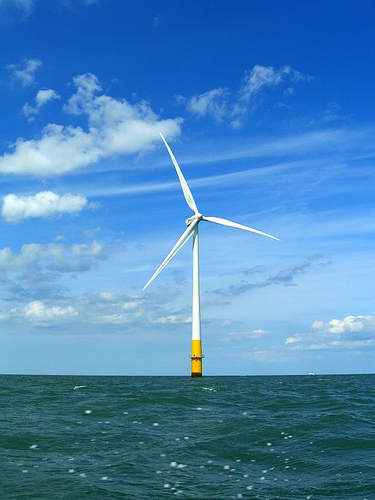
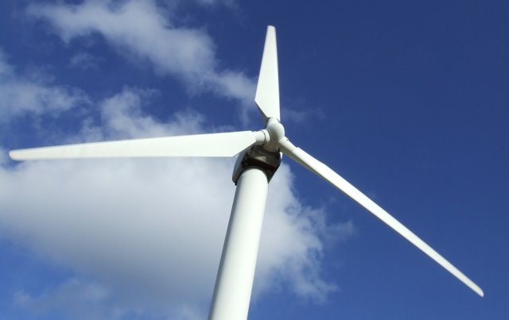
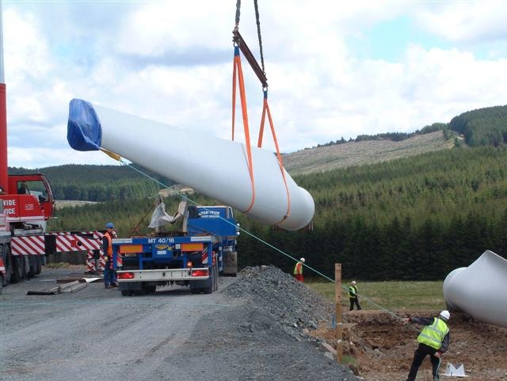
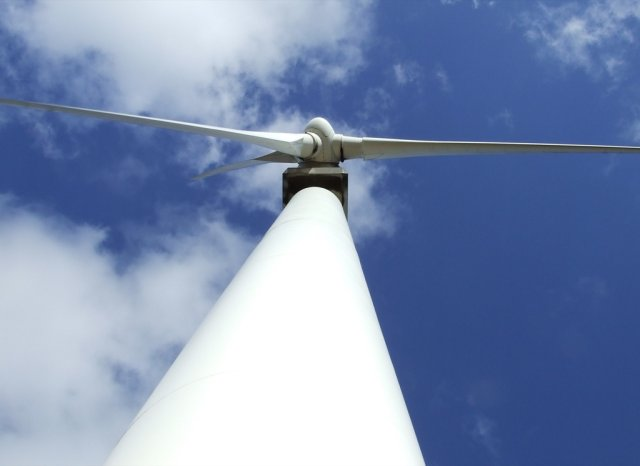
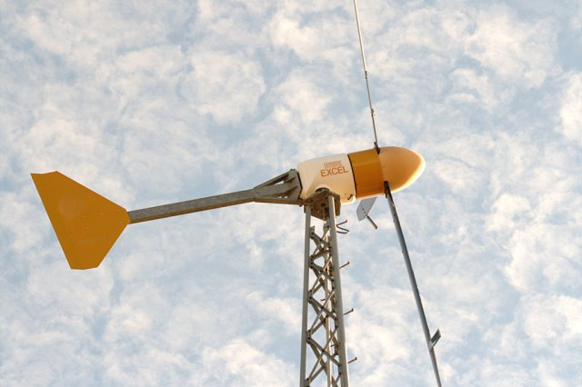
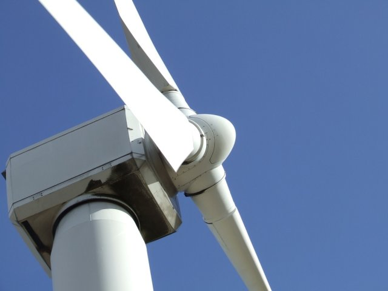

Anatomy of a Horizontal-Axis Wind Turbine
Today the most cost-effective means of capturing wind energy is a horizontal-axis wind turbine positioned on land or at sea in a proven windy area. Whether micro, personal or industrial – modern horizontal-axis wind turbines share the same basic features.
Wind TurbineLicense: CC BY 2.0, phault
CFD For Your Wind Turbine
Are you ready for a 30-day free trial of Caedium Professional?

While broadly similar to windmills of the past, today's horizontal-axis wind turbines are thoroughly modern, infused with Formula 1 racing car technology in the form of advanced aerodynamics, composite structures and real-time control systems. The elements of a horizontal-axis wind turbine make interesting reading – give it a spin!
Turbine Rotor
A horizontal-axis wind-turbine rotor usually consists of 3 blades (micro wind turbines tend to have more) attached to a horizontal shaft mounted on bearings on top of a support tower.
Rotor of a Horizontal-Axis Wind TurbineLicense: CC BY 2.0, Lepti
For an upwind turbine, the rotor is positioned on the windward side of the support tower such that the rotor blades are well clear of the tower. The blades will tend to bend toward the tower with a chance of hitting it unless there is adequate clearance and the blades are relatively stiff. A downwind turbine doesn't suffer from these rotor position constraints, but instead sacrifices efficiency.
Rotor Blade
A rotor blade directs lift force, generated by the airflow over its airfoil cross-section, tangential to its rotation direction – causing the rotor to rotate.
Blade of a Horizontal-Axis Wind TurbineLicense: CC BY 2.0, Brian Digital
Lift force is generated according to the same principles that govern lift from an airplane wing and downforce from a racing car wing. The angle of attack the blade makes with the oncoming wind on industrial wind turbines can vary so as to optimize the efficiency of the machine. Also the same mechanism can be used to idle the machine in the face of excessive wind strength to prevent damage to the blades.
Tower
Wherever there is wind there is also a layer of slower moving, usually turbulent air close to the ground known as a boundary layer.
Support Tower of a Horizontal-Axis Wind TurbineLicense: CC BY 2.0, Lepti
A support tower for a horizontal-axis wind turbine rotor ensures its rotor blades are above the slowest air in the boundary layer to gain exposure to higher energy, faster moving air.
Wind Alignment
Upwind horizontal-axis wind turbines are more efficient than downwind turbines because they don't encounter the turbulent wake (or shadow) shed from the support tower into the path of the downwind rotor.
Vane of a Horizontal-Axis Wind TurbineLicense: CC BY 2.0, Beige Alert
Upwind turbines require a means to keep the rotor on the windward side of the support tower. For smaller wind turbines, typically a passive rear wind vane is sufficient to align the rotor.
Nacelle of a Horizontal-Axis Wind TurbineLicense: CC BY 2.0, Lepti
For larger wind turbines an active alignment system consisting of wind sensors and a servo motor is usually incorporated into the nacelle on top of the support tower.
Generator
Micro wind turbines under ideal wind conditions rotate fast enough to generate electricity-grid-compatible alternating current (AC) directly. Larger wind turbines tend to rotate more slowly and need a gearbox to step up the speed to generate compatible AC. The generators (or more correctly alternators) are housed on top of the support tower in a nacelle directly adjacent to the wind turbine rotor.
So ends our tour of a horizontal-axis wind turbine. Clearly the overall efficiency of such a machine is largely dependent on its aerodynamic performance. Computational Fluid Dynamics (CFD) is a software simulation tool worth considering for evaluating the aerodynamic performance of key components such as airfoil cross-sections, blades and moving rotors in order to reduce the number of costly physical prototypes.
Feedback
Questions? Ideas? Problems?

Recent blog posts
- CFD Simulates Distant Past
- Background on the Caedium v6.0 Release
- Long-Necked Dinosaurs Succumb To CFD
- CFD Provides Insight Into Mystery Fossils
- Wind Turbine Design According to Insects
- Runners Discover Drafting
- Wind Tunnel and CFD Reveal Best Cycling Tuck
- Active Aerodynamics on the Lamborghini Huracán Performante
- Fluidic Logic
- Stonehenge Vortex Revealed as April Fools' Day Distortion Field
 Get our Blog feed
Get our Blog feed
Comments
Build Your Own
Are you interested in building your own horizontal-axis wind turbine? Then consider a homebrew project.
how to build small HAWT blade?.
I just finished build an axial flux generator for 200 watts output power but I have not get match blade wind turbine.
anyone help me to make it? or give me a simple wind turbine blade design software.
Thank you.